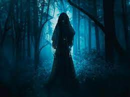

¿Qué son las leyendas?
Según la Real Academia Española las leyendas son narraciones de sucesos fantásticos que se transmite por tradición. Pueden ser relatos basados en un hecho o un personaje reales, deformados o magnificados por la fantasía o la admiración.
También pueden hablar de personas o cosas muy admiradas y que se recuerdan a pesar del paso del tiempo.
La mayoría de las leyendas nacen de una narración folclórica popular que cuenta un hecho real o fantasioso que tienen características un tanto extraordinarias, son adornadas con elementos fantásticos o maravillosos y se van transmitiendo de generación en generación, habitualmente en una primera etapa de forma oral, luego escrita. Muchas veces mezclan elementos de la fantasía con la realidad lo que las hace únicas y llamativas.
Suelen tener personajes encantados, con elementos sobrenaturales, criaturas milagrosas o en otras ocasiones personajes que forman parte del folclore o de la comunidad. Van presentado variaciones a lo largo del tiempo y también sufre modificaciones, consonante a los lugares en los cuales son relatadas, traspasan fronteras y se adaptan a las costumbres y épocas.